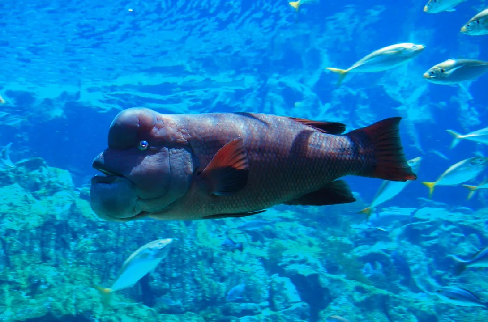

Аннотация
Погрузитесь в захватывающий мир океанской глубины, который раскроет перед вами завораживающие тайны подводной жизни!
Кораллы Окинавы: Окинава, этот маленький райский уголок на земле, скрывает под водой невероятное богатство коралловых рифов. Исследуйте удивительное разнообразие кораллов, их роль в морских экосистемах и уязвимость перед изменениями климата.
Редкая акула-призрак: Встречайте акулу-призрака, таинственное создание, которое остается одним из самых малоизученных морских хищников. Погрузитесь в их удивительный мир, исследуя их поведение и экологию.
Душа океана: Путешествуйте вместе с гигантскими китами и их связью с человечеством. Откройте их роль в мифологии и культуре, а также узнайте, как их выживание важно для сохранения экосистемы.
Диковинные морские обитатели: Раскройте загадочные обитатели глубоководных жилищ и их адаптации к жизни в абсолютной тьме и огромном давлении. Исследуйте их необычные формы и функции.
Этот сайт приглашает вас в захватывающее путешествие в мир, о котором многие только мечтают. От коралловых рифов Окинавы до глубоководных тайн, он освещает богатство и красоту подводной природы, ставшей домом для множества удивительных существ.
